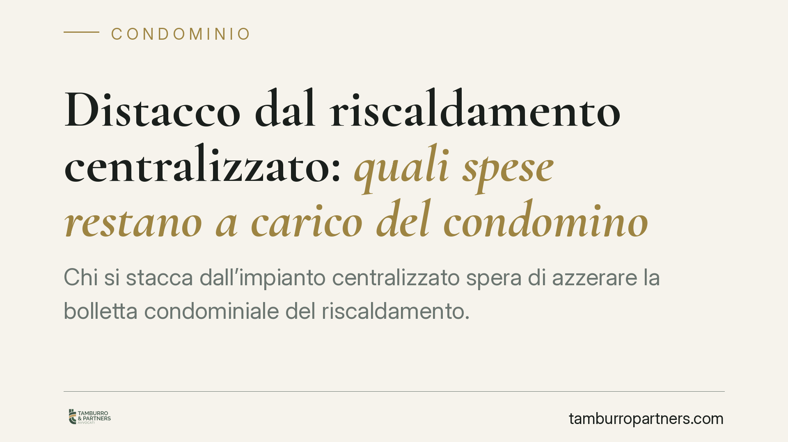

Distacco dal riscaldamento centralizzato: quali spese restano a carico del condomino
Chi si stacca dall'impianto centralizzato spera di azzerare la bolletta condominiale del riscaldamento. La legge, però, distingue con nettezza: i consumi si possono eliminare, le spese di conservazione e manutenzione straordinaria dell'impianto no. Capire dove passa questo confine evita contestazioni, decreti ingiuntivi e sorprese in assemblea.

Il quadro di partenza
Il distacco dall'impianto di riscaldamento centralizzato è una facoltà riconosciuta al singolo condomino, ma non è una via d'uscita completa dagli oneri condominiali legati all'impianto. La distinzione fondamentale è tra due categorie di spesa: i consumi (il calore effettivamente utilizzato) e le spese di conservazione dell'impianto come bene comune.
Il condomino che si distacca può liberarsi dei primi. Resta invece tenuto a contribuire ai secondi. È un principio consolidato nella giurisprudenza di legittimità e codificato dalla norma di riferimento.
Inquadramento normativo
La disposizione centrale è l'art. 1118, comma 4, del codice civile, introdotto dalla riforma del condominio (legge n. 220/2012). La norma consente al condomino di rinunciare all'uso dell'impianto centralizzato di riscaldamento o condizionamento "se dal suo distacco non derivano notevoli squilibri di funzionamento o aggravi di spesa per gli altri condomini".
Lo stesso comma precisa l'effetto economico: il rinunciante "resta tenuto a concorrere al pagamento delle sole spese per la manutenzione straordinaria dell'impianto e per la sua conservazione e messa a norma". È il cuore della questione. La legge ammette il distacco ma lo circoscrive sul piano dei costi: ciò che si elimina è il consumo, non la quota di manutenzione straordinaria, conservazione e adeguamento normativo dell'impianto.
Un chiarimento necessario: l'art. 1121 c.c. disciplina tutt'altro, ossia le innovazioni gravose o voluttuarie e il diritto dei condomini dissenzienti di non parteciparvi. Non è la base per una eventuale decisione assembleare di reintrodurre o mantenere l'impianto centralizzato. Eventuali delibere su dismissione o ripristino dell'impianto vanno valutate caso per caso, secondo le regole proprie delle innovazioni e delle maggioranze assembleari, senza automatismi.
La questione delle dispersioni di calore
Un punto spesso frainteso riguarda le cosiddette dispersioni di calore. Il condomino distaccato non paga i consumi, ma può restare chiamato a contribuire alle dispersioni involontarie di calore dalle parti comuni dell'impianto (ad esempio colonne montanti che attraversano le sue unità o tubazioni comuni che irradiano calore).
Non si tratta però di una voce automatica. L'addebito richiede l'accertamento tecnico che tali dispersioni esistano, siano involontarie e incidano effettivamente. È una questione di fatto, da dimostrare caso per caso, non una posta di bilancio da applicare in via presuntiva a ogni distaccato.
Il profilo probatorio
Qui si gioca gran parte del contenzioso. Chi intende distaccarsi deve dimostrare che dal distacco non derivano notevoli squilibri di funzionamento né aggravi di spesa per gli altri condomini. Lo strumento tipico è una perizia tecnica redatta da un professionista abilitato, che valuti l'impianto e gli effetti del distacco.
Sul versante opposto, il condominio che pretende contributi dal distaccato (ad esempio per dispersioni) deve a sua volta provarne l'esistenza e l'entità. In giudizio l'onere della prova tende a gravare su chi avanza la pretesa economica o contesta la legittimità del distacco. Una documentazione tecnica solida, da entrambi i lati, è spesso decisiva.
Implicazioni pratiche per il condomino
Chi valuta il distacco deve mettere in conto che il risparmio non è integrale. Restano dovute le quote per manutenzione straordinaria, conservazione e messa a norma dell'impianto, oltre agli eventuali contributi per dispersioni involontarie accertate. Procedere senza perizia espone al rischio che l'assemblea contesti il distacco e che il risparmio atteso si riveli inferiore alle previsioni.
Cosa fare in concreto
- Commissionate una perizia tecnica prima del distacco, che attesti l'assenza di squilibri di funzionamento e di aggravi di spesa per gli altri condomini.
- Comunicate formalmente l'intenzione di distacco all'amministratore, allegando la relazione tecnica, e chiedete che la questione sia portata in assemblea.
- Distinguete le voci in bilancio: verificate che i riparti futuri vi escludano dai consumi ma mantengano, correttamente, le quote di conservazione e manutenzione straordinaria.
- Contestate tempestivamente eventuali addebiti per dispersioni non supportati da un accertamento tecnico specifico.
- Conservate la documentazione (perizia, verbali, comunicazioni): in caso di contenzioso o decreto ingiuntivo sarà il primo elemento a essere richiesto.
---
*Contributo informativo a cura di Tamburro & Partners - Avv. Giuseppe Tamburro. Non costituisce parere legale.*
Ogni condominio ha una storia a sé.
Se gestisci un'amministrazione e vuoi un confronto su una specifica questione condominiale, scrivi allo studio. Ti rispondiamo entro un giorno lavorativo.